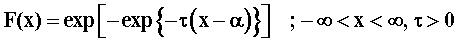
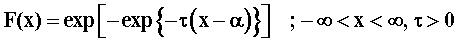

![[gumbel_ex0]](gumbel_ex0.bmp) Gumbel distribution
Gumbel distribution
![[gumbel_ex1]](gumbel_ex1.bmp) 
model
{
for( i in 1 : N )
{
x[i] ~ dgumbel(alpha, tau)
}
# Prior distributions of the model parameters
# Gamma Prior
alpha ~ dgamma(0.001, 0.001)
tau~ dgamma(0.001, 0.001)
}
The data set is taken from Murthy et al. (2004, pp. 119 ).
Murthy, D. N. P., Xie, M., Jiang, R. (2004). Weibull Models , Wiley-Interscience.
Data ( click to open )
Inits for chain 1 Inits for chain 2 ( click to open )
Results